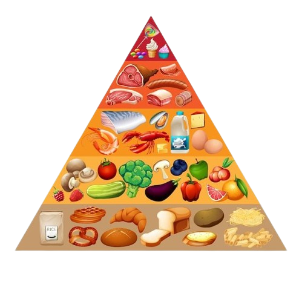

Welcome!
Welcome to Health Hub! Our mission is to help you navigate today’s food trends and lifestyle choices with clear, actionable health information. Designed for the Alpha Generation, our site offers practical tips on nutrition, exercise, and overall wellness to support healthier living. On our Health Info page, you'll find easy-to-follow advice on maintaining a balanced diet and staying active, while our BMI Calculator page helps you understand your body mass index and set realistic health goals. We aim to simplify health choices and inspire proactive management of your well-being. Join us in making informed decisions for a healthier future!
What is BMI?
Body Mass Index (BMI) is a widely used metric that assesses whether an individual has a healthy body weight relative to their height. It is calculated by dividing a person's weight in kilograms by the square of their height in meters, or by using pounds and inches in a slightly different formula. The resulting number is then categorized into different weight status groups: underweight (BMI < 18.5), normal weight (BMI 18.5–24.9), overweight (BMI 25–29.9), and obesity (BMI ≥ 30). While BMI serves as a useful screening tool to identify potential health risks related to weight, such as heart disease and diabetes, it has limitations. It doesn’t account for variations in muscle mass versus fat, nor does it differentiate between types of fat. Therefore, a person with a high muscle mass might be classified as overweight or obese even if they have a low body fat percentage. For a more comprehensive health assessment, BMI should be considered alongside other measurements, such as body fat percentage, waist circumference, and overall fitness.
